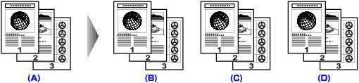
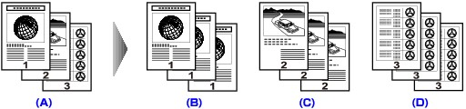
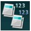

You can obtain sorted printouts when making multiple copies of a multi-paged original. In addition, you can copy originals on both sides of paper.
-
Collated copy selected.
(A) Originals
(B) Copy 1
(C) Copy 2
(D) Copy 3
-
Collated copy not selected.
(A) Originals
(B) Copy 1
(C) Copy 2
(D) Copy 3
 Note
Note-
When you use this function, load the original in the ADF.
-
Display the copy menu screen.
-
Select  Collated copy, then press the OK button.
-
Specify the number of copies by using the + or - button.
Change the print settings as necessary.
Note-
When you perform collated copy in combination with Two-sided copy, press the right Function button in the Copy standby screen to select the orientation of the original and the stapling side in 2-sided.
-
-
Press the Color button for color copying, or the Black button for black & white copying.
Note-
The number of pages the machine can read varies with the document. If Device memory is full. Cannot continue process. appears on the LCD when scanning, reduce the number of document pages to scan and try copying again.